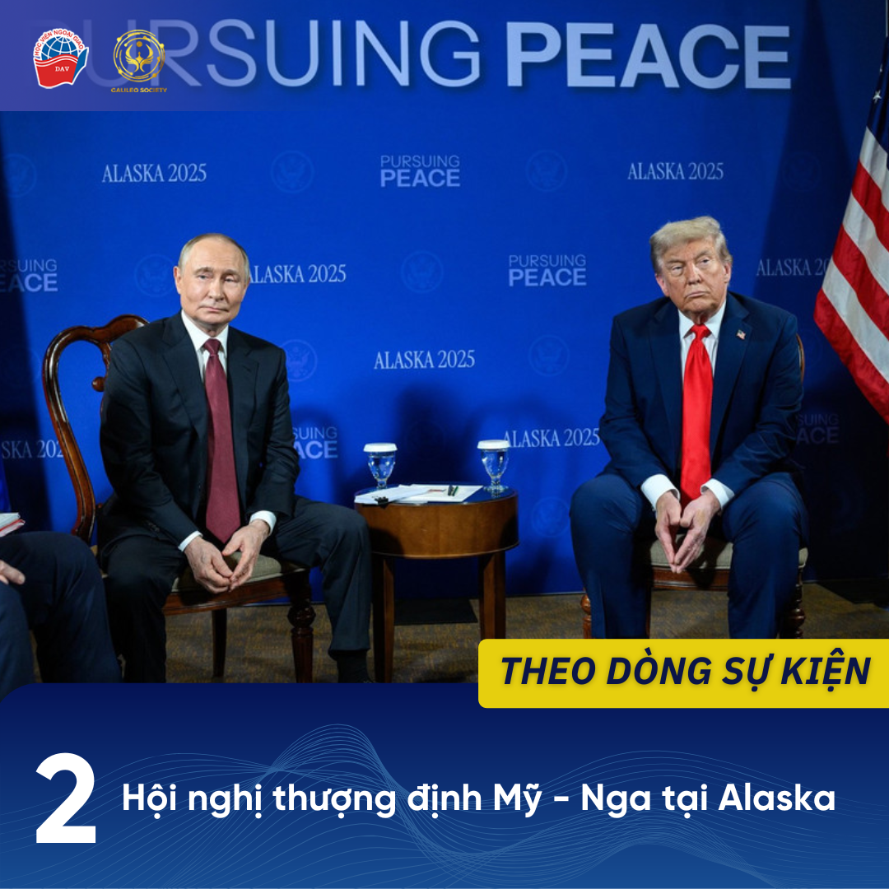
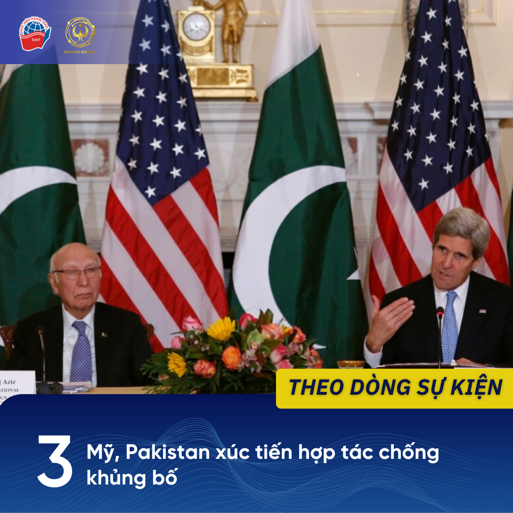
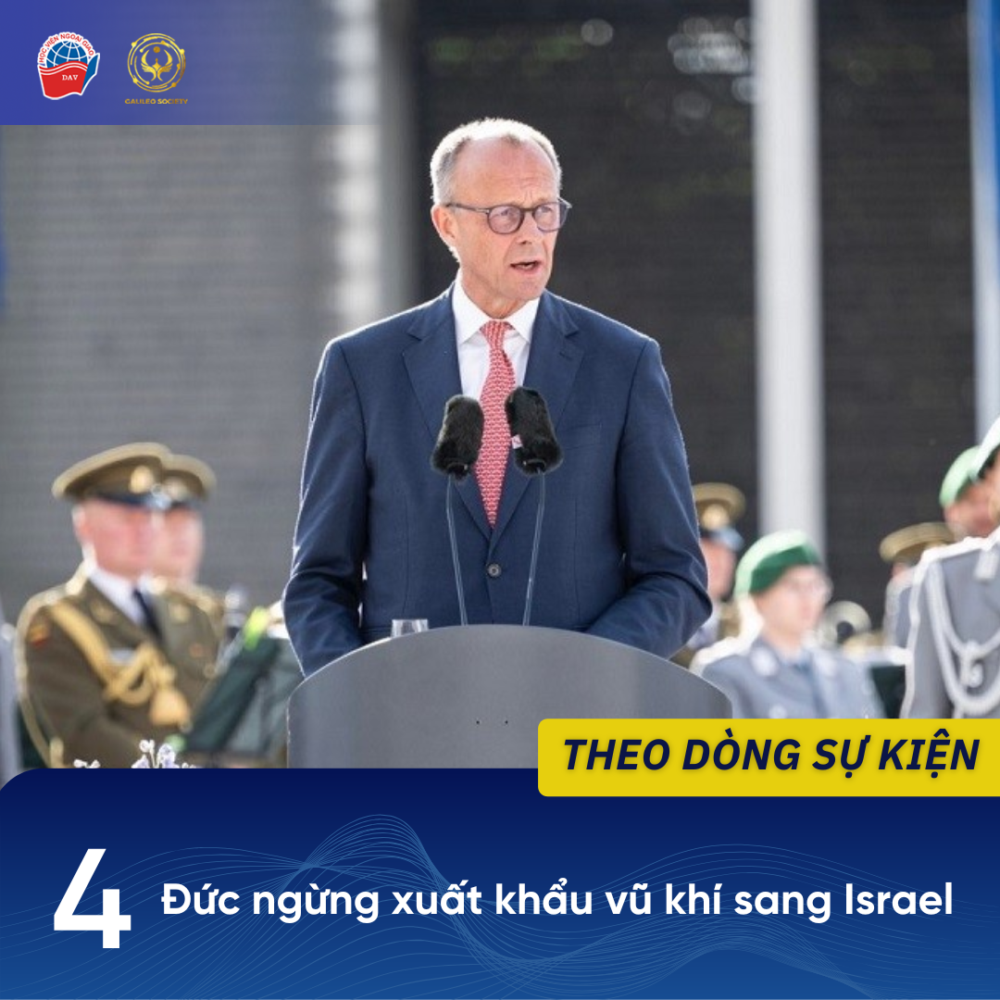
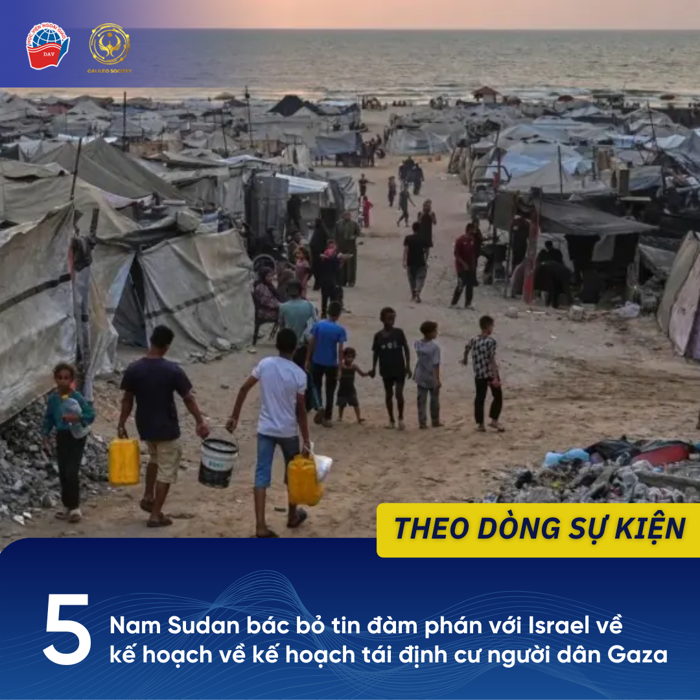

1 Hội nghị Bộ trưởng Ngoại giao hợp tác Mekong - Lan Thương lần thứ 10 diễn ra tại An Ninh, Trung Quốc
Ngày 15/8, tại thành phố An Ninh, Trung Quốc, Hội nghị Bộ trưởng Ngoại giao hợp tác Mekong - Lan Thương (MLC) lần thứ 10 đã diễn ra với sự tham dự của bộ trưởng ngoại giao các nước thành viên MLC: Campuchia, Lào, Myanmar, Thái Lan, Trung Quốc và Việt Nam.
Với chủ đề “Thập kỷ vàng: Kiên định, đoàn kết xây dựng cộng đồng tốt đẹp hơn”, Hội nghị đã nhìn lại chặng đường hoạt động của MLC, nhấn mạnh các thành tựu trong đổi mới sáng tạo, phát triển hạ tầng, ứng phó với thiên tai và cải thiện đời sống nhân dân vùng lưu vực sông. Các nước đều tán thành MLC là một cơ chế hợp tác tiểu vùng hiệu quả, đóng góp quan trọng vào thúc đẩy tăng trưởng bền vững, hội nhập sâu rộng của khu vực.
Bên cạnh đó, trong bối cảnh mới nhiều biến động của khu vực và thế giới, Hội nghị cũng nhất trí cần phải nâng cấp cơ chế hợp tác, phát triển lên MLC 2.0. Động lực tăng trưởng mới cho khu vực sẽ là chuyển đổi số và đổi mới sáng tạo; ứng dụng hiệu quả các công cụ trên cơ sở hợp tác toàn diện trong các lĩnh vực như tài nguyên nước, quản trị môi trường, nông nghiệp, hạ tầng và giao lưu nhân dân. Bên lề hội nghị cũng đã diễn ra các buổi hội đàm song phương nhằm xây dựng các phương án hợp tác cụ thể giữa các nước.
Nguồn tham khảo:
1. Công Xuyên, “Các nước Mekong và Trung Quốc đoàn kết xây dựng cộng đồng Mekong-Lan Thương tốt đẹp hơn”, Báo Tin tức, ngày 15/8/2025. Truy cập ngày 17/8/2025.
https://baotintuc.vn/.../cac-nuoc-mekong-va-trung-quoc...
2. Mo Jingxi, “Lancang-Mekong nations pledge unity”, China Daily, ngày 16/8/2025. Truy cập ngày 17/8/2025.
https://www.chinadailyasia.com/hk/article/617989
3. Xinhua, “Foreign ministers’ meeting calls for upgraded Lancang-Mekong cooperation”, Global Times, ngày 16/8/2025. Truy cập ngày 17/8/2025. https://www.globaltimes.cn/page/202508/1341000.shtml
2 Hội nghị thượng đỉnh Mỹ - Nga diễn ra tại Alaska
Ngày 15/8, tại Anchorage, Alaska, Mỹ, cuộc gặp thượng đỉnh giữa Tổng thống Mỹ Donald Trump cùng người đồng cấp Nga Vladimir Putin đã diễn ra. Cuộc gặp thượng đỉnh được đánh giá đã làm “tan băng” trong quan hệ Mỹ - Nga; dẫu chưa đạt được thỏa thuận nào song cũng đã mở ra triển vọng thiết lập lại hòa bình tại Ukraine.
Sau ba giờ gặp gỡ kín, hai vị tổng thống chia sẻ trong buổi họp báo rằng đã đạt được sự đồng thuận ở nhiều điểm; nhấn mạnh sự tiến triển và hiệu quả của cuộc gặp này. Thông điệp của hai nhà lãnh đạo đều chỉ ra Ukraine và châu Âu đang nắm giữ vai trò quyết định đối với tình hình xung đột hiện tại. Tổng thống Putin trình bày mong muốn về cách tiếp cận mang tính xây dựng từ phía Kiev và châu Âu, không tạo thêm trở ngại cho tiến trình hòa bình. Từ phía Mỹ, ông Trump bày tỏ dự định sẽ trao đổi với NATO và Ukraine sau buổi gặp với Tổng thống Nga.
Về vấn đề quan hệ song phương, ông Trump tuyên bố sẽ không có biện pháp trừng phạt mới nào được áp đặt trong khi nhà lãnh đạo Nga nêu ra thiện chí đưa quan hệ Nga - Mỹ sang trang mới - quay trở lại hợp tác trên đa lĩnh vực. Kết thúc họp báo, Tổng thống Nga Putin đã có lời mời người đồng cấp Mỹ hội đàm lần tới tại Moscow; ông Trump để ngỏ về cuộc gặp lần tới này.
Nguồn tham khảo:
1. An Bình, “TOÀN CẢNH THƯỢNG ĐỈNH NGA – MỸ: Đạt nhiều điểm thống nhất”, Báo Chính phủ, ngày 16/8/2025. Truy cập ngày 17/8/2025.
https://baochinhphu.vn/thuong-dinh-nga-my-nhung-dien-bien...
2. Xuân Phong, “Cuộc gặp thượng đỉnh Nga - Mỹ mở ra nhiều cơ hội”, Báo Quân đội Nhân dân, ngày 17/8/2025. Truy cập ngày 17/8/2025.
https://www.qdnd.vn/.../cuoc-gap-thuong-dinh-nga-my-mo-ra...
3. McCready A., “‘No deal’ at Trump-Putin meeting: Key takeaways from Alaska summit”, Al Jazeera, ngày 16/8/2025. Truy cập ngày 17/8/2025.
https://www.aljazeera.com/.../no-deal-at-trump-putin...
4. Sanger D. E., “No Deal, but No Consequence for Putin”, The New York Times, ngày 15/8/2025. Truy cập ngày 17/8/2025.
https://www.nytimes.com/.../trump-putin-summit-ukrainians...
3 Mỹ, Pakistan xúc tiến hợp tác chống khủng bố
Ngày 12/8, trong khuôn khổ đối thoại song phương về chống khủng bố ở thủ đô Islamabad, Pakistan và Mỹ đã đồng thuận tăng cường hợp tác trong việc đối phó với các nhóm khủng bố, bao gồm Tehreek‑e‑Taliban Pakistan (TTP), ISIS-Khorasan và Quân Giải phóng Balochistan (BLA). Hai nước đã tái khẳng định cam kết chung trong cuộc chiến chống “mọi hình thức khủng bố”.
Buổi đối thoại tập trung vào củng cố nền tảng thể chế và nâng cao năng lực ứng phó với các mối đe dọa an ninh ngày càng phức tạp, đặc biệt là nguy cơ lạm dụng các công nghệ mới cho mục đích khủng bố. Phái đoàn hai bên khẳng định sự cam kết bền vững và có tổ chức là điều thiết yếu đối với công cuộc chống khủng bố, duy trì hòa bình và ổn định; đồng thời bày tỏ ý định hợp tác với các diễn đàn đa phương như Liên Hợp Quốc trong việc theo đuổi mục tiêu này.
Cuộc đối thoại diễn ra chỉ một ngày sau khi Mỹ liệt kê BLA vào danh sách “tổ chức khủng bố nước ngoài” (FTO) của mình. Đây được coi là động thái cứng rắn hơn khi mà BLA đã nằm trong danh sách “khủng bố quốc tế được chỉ định đặc biệt” (SDGT) của Mỹ từ năm 2019.
Nguồn tham khảo:
1. Phương Oanh, “Mỹ, Pakistan tái khẳng định việc hợp tác chặt chẽ trong cuộc chiến chống khủng bố”, Báo Tin tức, ngày 13/8/2025. Truy cập ngày 17/8/2025.
https://baotintuc.vn/.../my-pakistan-tai-khang-dinh-viec...
2. “U.S., Pakistan to deepen bilateral cooperation to tackle leading terrorist groups”, The Hindu, ngày 13/8/2025. Truy cập ngày 17/8/2025.
https://www.thehindu.com/.../us.../article69927592.ece
3. “US puts Balochistan armed group in Pakistan on ‘foreign terrorist’ list”, Al Jazeera, ngày 11/8/2025. Truy cập ngày 17/8/2025.
https://www.aljazeera.com/.../us-puts-balochistan-armed...
4 Đức ngừng xuất khẩu vũ khí sang Israel
Ngày 8/8, Thủ tướng Đức Friedrich Merz đã đưa ra thông báo về quyết định đình chỉ hoạt động xuất khẩu các loại vũ khí có thể được sử dụng ở Dải Gaza bởi quân đội Israel, đánh dấu lần đầu tiên Berlin công khai từ chối hỗ trợ quân sự cho đồng minh lâu năm. Quyết định này được đưa ra trong bối cảnh áp lực từ dư luận và các đồng sự của Thủ tướng về khủng hoảng nhân đạo nghiêm trọng tại Dải Gaza khi mà Israel đã thắt chặt nguồn nước và thực phẩm.
Trong phát biểu của mình, Thủ tướng Đức khẳng định Israel có quyền phòng vệ trước Hamas và xúc tiến cho việc trao trả con tin; ông nhấn mạnh đó là ưu tiên hàng đầu song hành cùng thái độ kiên quyết hướng tới đàm phán ngừng bắn. Tuy nhiên, chính phủ Đức tin rằng việc tăng cường hoạt động quân sự tại Dải Gaza từ phía Israel chỉ làm việc đạt được những mục tiêu nêu trên trở nên khó khăn hơn. Israel cũng phải chịu trách nhiệm cho tình hình thiếu thốn trầm trọng của người dân dải Gaza. Bầu không khí đáng lo ngại là động lực chính đưa đến quyết định dừng xuất khẩu vũ khí của Đức.
Thông điệp trong bài phát biểu của Thủ tướng Đức không phải là mới nhưng việc lần này có một lệnh đình chỉ đi kèm phản ánh Israel đã vượt quá giới hạn. Phía Israel chỉ trích đó là động thái tiếp tay cho khủng bố khi cấm vận vũ trang cho quân đội nước này.
Nguồn tham khảo:
1. Hà Trang, “Đức ngừng xuất khẩu vũ khí sang Israel trong bối cảnh khủng hoảng nhân đạo ở Gaza”, Báo Điện tử Công luận, ngày 9/8/2025. Truy cập ngày 17/8/2025.
https://congluan.vn/duc-ngung-xuat-khau-vu-khi-sang...
2. Knolle K., Alkousaa R., “Germany halts arms exports that Israel can use in Gaza”, Reuters, ngày 8/8/2025. Truy cập ngày 17/8/2025.
https://www.reuters.com/.../germany-halts-arms-exports.../
3. Cole D., O'Carroll L., “Germany halts export to Israel of arms that could be used in Gaza as global outcry grows”, The Guardian, ngày 8/8/2025. Truy cập ngày 17/8/2025.
https://www.theguardian.com/.../germany-halts-military...
4. Robbins S., “Germany is one of Israel's strongest allies - so stopping export of arms that could be used in Gaza is huge shift”, Sky News, ngày 8/8/2025. Truy cập ngày 17/8/2025.
https://news.sky.com/.../germany-is-one-of-israels...
5 Nam Sudan bác bỏ tin đàm phán với Israel về kế hoạch tái định cư người dân Gaza
Ngày 14/8, Bộ Ngoại giao Nam Sudan đã bác tin quốc gia này có khả năng trở thành nơi tái định cư cho người dân Palestine ở Dải Gaza. Động thái này xuất phát từ việc hãng tin Associated Press của Mỹ đã thông tin rằng Nam Sudan và Israel đang trong quá trình đàm phán về đề nghị cưỡng chế di dời người dân Palestine khỏi Dải Gaza tới quốc gia châu Phi. Bộ Ngoại giao Nam Sudan khẳng định tuyên bố đó là không có cơ sở và không đại diện cho chính quyền hay chính sách của quốc gia này.
Theo hãng tin nêu trên, Israel và Mỹ đã khởi động việc thảo luận với một số quốc gia Đông Phi về việc di dời người dân Palestine. Nam Sudan là một trong số đó, bên cạnh Somalia và lãnh thổ tự trị Somaliland. Kế hoạch đó được nhận định là sẽ mở đường của Israel sát nhập Dải Gaza, thiết lập các khu tái định cư mới không dành cho người Palestine, ngược lại, ngăn cản họ trở về quê hương của mình. Trước đó, vào tháng 3, Somalia và vùng tự trị Somaliland cũng đã phủ nhận việc nhận được đề xuất tương tự từ phía Israel hay Mỹ; đồng thời khẳng định sẽ từ chối những phương án như vậy.
Nguồn tham khảo
1. “South Sudan denies Israel talks over forced transfer of Palestinians”, Al Jazeera, ngày 13/8/2025. Truy cập ngày 17/8/2025.
https://www.aljazeera.com/.../israel-south-sudan-in-talks...
2. Ngọc Mai, “Nam Sudan bác tin đàm phán tái định cư Gaza với Israel”, Đài Hà Nội, ngày 15/8/2025. Truy cập ngày 17/8/2025.
https://hanoionline.vn/nam-sudan-bac-tin-dam-phan-tai...
3. “South Sudan says no talks with Israel to resettle Palestinians from Gaza”, Reuters, ngày 15/8/2025. Truy cập ngày 17/8/2025.
https://www.reuters.com/.../south-sudan-says-no-talks.../